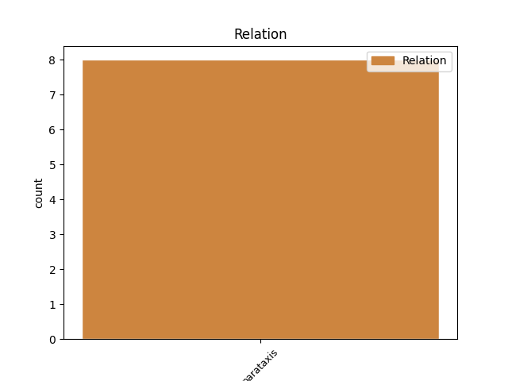
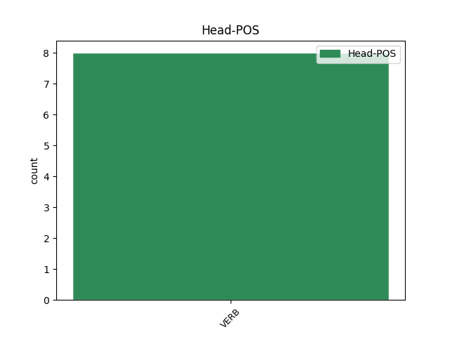
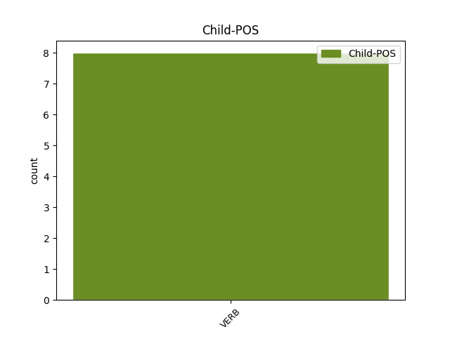

Distribution of features within this leaf



Agreement Rules sorted by frequency.
- When the dependent token is the parataxis(parataxis) of the head token, and the head token is VERB and the dependent token is VERB.
1 Como _ _ _ _ 0 _ _ _
2 os _ _ _ _ 0 _ _ _
3 autores _ _ _ _ 0 _ _ _
4 de _ _ _ _ 0 _ _ _
5 a _ _ _ _ 0 _ _ _
6 tradución _ _ _ _ 0 _ _ _
7 completa _ _ _ _ 0 _ _ _
8 anos _ _ _ _ 0 _ _ _
9 máis _ _ _ _ 0 _ _ _
10 tarde _ _ _ _ 0 _ _ _
11 , _ _ _ _ 0 _ _ _
12 e _ _ _ _ 0 _ _ _
13 tamén _ _ _ _ 0 _ _ _
14 de _ _ _ _ 0 _ _ _
15 os _ _ _ _ 0 _ _ _
16 predecesores _ _ _ _ 0 _ _ _
17 , _ _ _ _ 0 _ _ _
18 os _ _ _ _ 0 _ _ _
19 autores _ _ _ _ 0 _ _ _
20 exercen exercer VERB Vpi30p Mood=Ind|Number=Plur|Person=3|Tense=Pres|VerbForm=Fin 0 _ _ _
21 o _ _ _ _ 0 _ _ _
22 traballo _ _ _ _ 0 _ _ _
23 con _ _ _ _ 0 _ _ _
24 unha _ _ _ _ 0 _ _ _
25 intención _ _ _ _ 0 _ _ _
26 de _ _ _ _ 0 _ _ _
27 normalización _ _ _ _ 0 _ _ _
28 de _ _ _ _ 0 _ _ _
29 a _ _ _ _ 0 _ _ _
30 lingua _ _ _ _ 0 _ _ _
31 , _ _ _ _ 0 _ _ _
32 " _ _ _ _ 0 _ _ _
33 este _ _ _ _ 0 _ _ _
34 molliño _ _ _ _ 0 _ _ _
35 de _ _ _ _ 0 _ _ _
36 follas _ _ _ _ 0 _ _ _
37 , _ _ _ _ 0 _ _ _
38 esta _ _ _ _ 0 _ _ _
39 tradución _ _ _ _ 0 _ _ _
40 que _ _ _ _ 0 _ _ _
41 hoxe _ _ _ _ 0 _ _ _
42 damos _ _ _ _ 0 _ _ _
43 a _ _ _ _ 0 _ _ _
44 o _ _ _ _ 0 _ _ _
45 prelo _ _ _ _ 0 _ _ _
46 , _ _ _ _ 0 _ _ _
47 tenta tentar VERB Vpi30s Mood=Ind|Number=Sing|Person=3|Tense=Pres|VerbForm=Fin 20 parataxis _ _
48 ser _ _ _ _ 0 _ _ _
49 unha _ _ _ _ 0 _ _ _
50 aportación _ _ _ _ 0 _ _ _
51 máis _ _ _ _ 0 _ _ _
52 a _ _ _ _ 0 _ _ _
53 a _ _ _ _ 0 _ _ _
54 laboura _ _ _ _ 0 _ _ _
55 , _ _ _ _ 0 _ _ _
56 nunca _ _ _ _ 0 _ _ _
57 dabondo _ _ _ _ 0 _ _ _
58 exercitada _ _ _ _ 0 _ _ _
59 , _ _ _ _ 0 _ _ _
60 de _ _ _ _ 0 _ _ _
61 arrequecer _ _ _ _ 0 _ _ _
62 a _ _ _ _ 0 _ _ _
63 nosa _ _ _ _ 0 _ _ _
64 literatura _ _ _ _ 0 _ _ _
65 con _ _ _ _ 0 _ _ _
66 a _ _ _ _ 0 _ _ _
67 incorporación _ _ _ _ 0 _ _ _
68 de _ _ _ _ 0 _ _ _
69 textos _ _ _ _ 0 _ _ _
70 alleos _ _ _ _ 0 _ _ _
71 " _ _ _ _ 0 _ _ _
72 . _ _ _ _ 0 _ _ _
Disagree Examples:
1 " _ _ _ _ 0 _ _ _
2 Non _ _ _ _ 0 _ _ _
3 se _ _ _ _ 0 _ _ _
4 lle _ _ _ _ 0 _ _ _
5 cocía cocer VERB Vii30s Mood=Ind|Number=Sing|Person=3|Tense=Imp|VerbForm=Fin 0 _ _ _
6 o _ _ _ _ 0 _ _ _
7 pan _ _ _ _ 0 _ _ _
8 en _ _ _ _ 0 _ _ _
9 o _ _ _ _ 0 _ _ _
10 corpo _ _ _ _ 0 _ _ _
11 a _ _ _ _ 0 _ _ _
12 Don _ _ _ _ 0 _ _ _
13 Quixote _ _ _ _ 0 _ _ _
14 , _ _ _ _ 0 _ _ _
15 como _ _ _ _ 0 _ _ _
16 adoita _ _ _ _ 0 _ _ _
17 dicir _ _ _ _ 0 _ _ _
18 se _ _ _ _ 0 _ _ _
19 , _ _ _ _ 0 _ _ _
20 ata _ _ _ _ 0 _ _ _
21 ouvire _ _ _ _ 0 _ _ _
22 e _ _ _ _ 0 _ _ _
23 saber _ _ _ _ 0 _ _ _
24 as _ _ _ _ 0 _ _ _
25 maravillas _ _ _ _ 0 _ _ _
26 prometidas _ _ _ _ 0 _ _ _
27 de _ _ _ _ 0 _ _ _
28 o _ _ _ _ 0 _ _ _
29 home _ _ _ _ 0 _ _ _
30 portador _ _ _ _ 0 _ _ _
31 de _ _ _ _ 0 _ _ _
32 armas _ _ _ _ 0 _ _ _
33 " _ _ _ _ 0 _ _ _
34 , _ _ _ _ 0 _ _ _
35 arrinca arrincar VERB Vpi30s Mood=Ind|Number=Sing|Person=3|Tense=Pres|VerbForm=Fin 5 parataxis _ _
36 a _ _ _ _ 0 _ _ _
37 tradución _ _ _ _ 0 _ _ _
38 de _ _ _ _ 0 _ _ _
39 o _ _ _ _ 0 _ _ _
40 capítulo _ _ _ _ 0 _ _ _
41 25 _ _ _ _ 0 _ _ _
42 , _ _ _ _ 0 _ _ _
43 " _ _ _ _ 0 _ _ _
44 onde _ _ _ _ 0 _ _ _
45 se _ _ _ _ 0 _ _ _
46 aponta _ _ _ _ 0 _ _ _
47 a _ _ _ _ 0 _ _ _
48 aventura _ _ _ _ 0 _ _ _
49 de _ _ _ _ 0 _ _ _
50 o _ _ _ _ 0 _ _ _
51 orneo _ _ _ _ 0 _ _ _
52 e _ _ _ _ 0 _ _ _
53 a _ _ _ _ 0 _ _ _
54 chusqueira _ _ _ _ 0 _ _ _
55 de _ _ _ _ 0 _ _ _
56 o _ _ _ _ 0 _ _ _
57 titereiro _ _ _ _ 0 _ _ _
58 , _ _ _ _ 0 _ _ _
59 con _ _ _ _ 0 _ _ _
60 as _ _ _ _ 0 _ _ _
61 lembradas _ _ _ _ 0 _ _ _
62 adiviñanzas _ _ _ _ 0 _ _ _
63 de _ _ _ _ 0 _ _ _
64 o _ _ _ _ 0 _ _ _
65 macaco _ _ _ _ 0 _ _ _
66 adiviñador _ _ _ _ 0 _ _ _
67 " _ _ _ _ 0 _ _ _
68 . _ _ _ _ 0 _ _ _
1 " _ _ _ _ 0 _ _ _
2 Cando _ _ _ _ 0 _ _ _
3 me _ _ _ _ 0 _ _ _
4 propuxeron propoñer VERB Vei30p Mood=Ind|Number=Plur|Person=3|Tense=Past|VerbForm=Fin 0 _ _ _
5 a _ _ _ _ 0 _ _ _
6 tradución _ _ _ _ 0 _ _ _
7 _ _ _ _ _ 0 _ _ _
8 lembra lembrar VERB Vpi30s Mood=Ind|Number=Sing|Person=3|Tense=Pres|VerbForm=Fin 4 parataxis _ _
9 Arias _ _ _ _ 0 _ _ _
10 _ _ _ _ _ 0 _ _ _
11 pensei _ _ _ _ 0 _ _ _
12 que _ _ _ _ 0 _ _ _
13 era _ _ _ _ 0 _ _ _
14 unha _ _ _ _ 0 _ _ _
15 oportunidade _ _ _ _ 0 _ _ _
16 que _ _ _ _ 0 _ _ _
17 non _ _ _ _ 0 _ _ _
18 se _ _ _ _ 0 _ _ _
19 podía _ _ _ _ 0 _ _ _
20 desperdiciar _ _ _ _ 0 _ _ _
21 e _ _ _ _ 0 _ _ _
22 de _ _ _ _ 0 _ _ _
23 unha _ _ _ _ 0 _ _ _
24 grande _ _ _ _ 0 _ _ _
25 importancia _ _ _ _ 0 _ _ _
26 para _ _ _ _ 0 _ _ _
27 a _ _ _ _ 0 _ _ _
28 normalización _ _ _ _ 0 _ _ _
29 de _ _ _ _ 0 _ _ _
30 o _ _ _ _ 0 _ _ _
31 galego _ _ _ _ 0 _ _ _
32 . _ _ _ _ 0 _ _ _